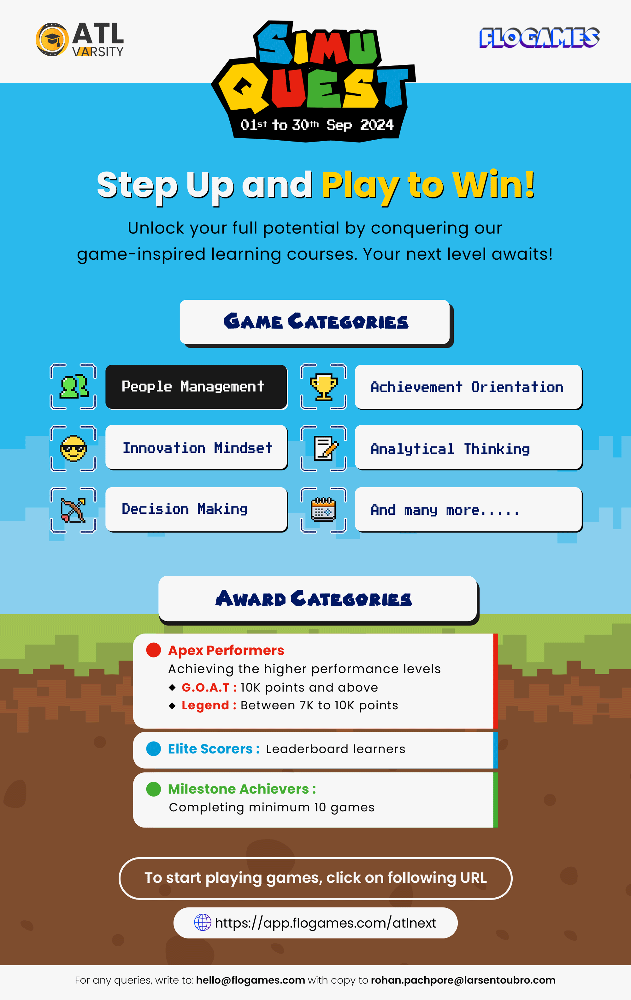
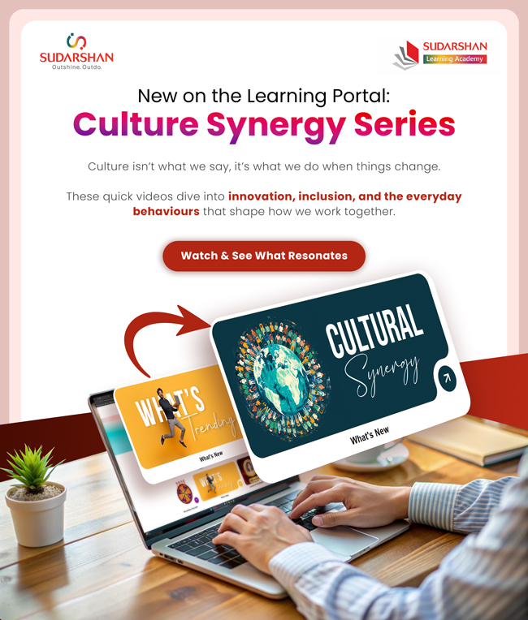
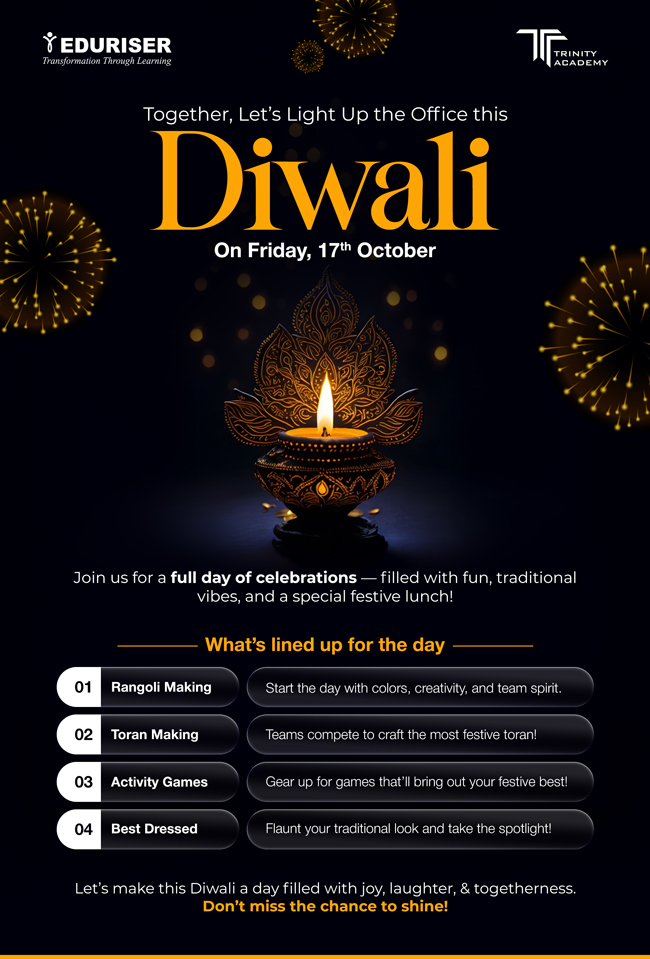
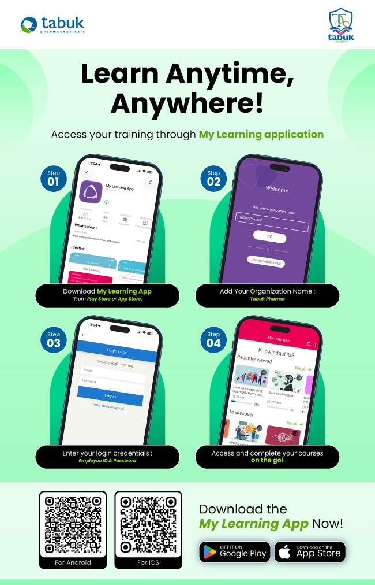
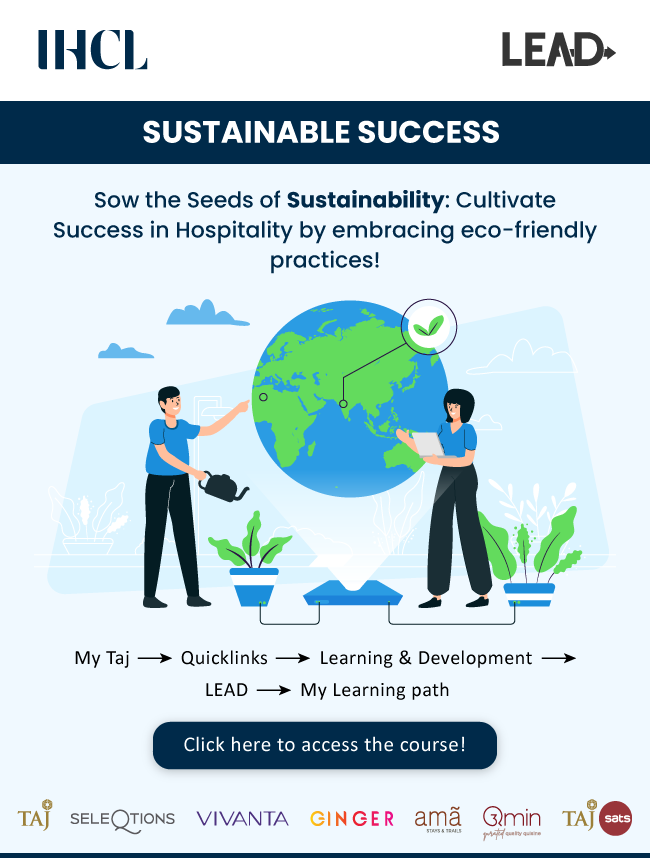
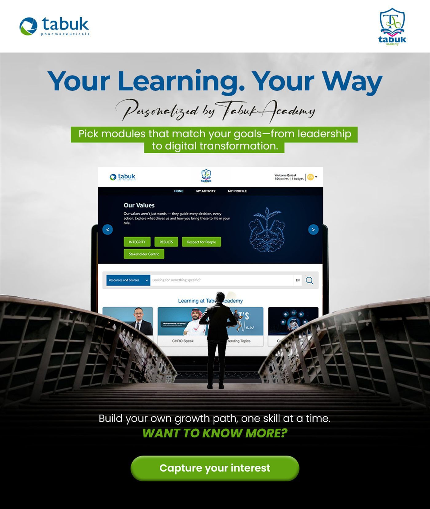
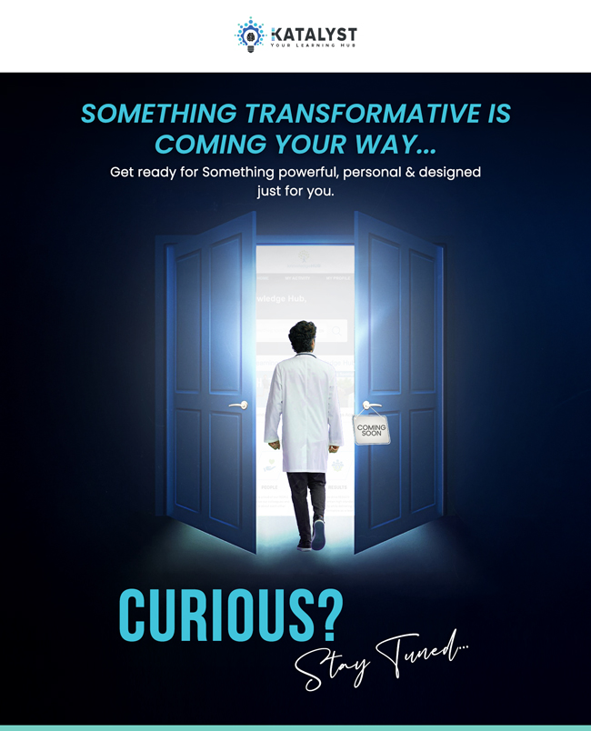
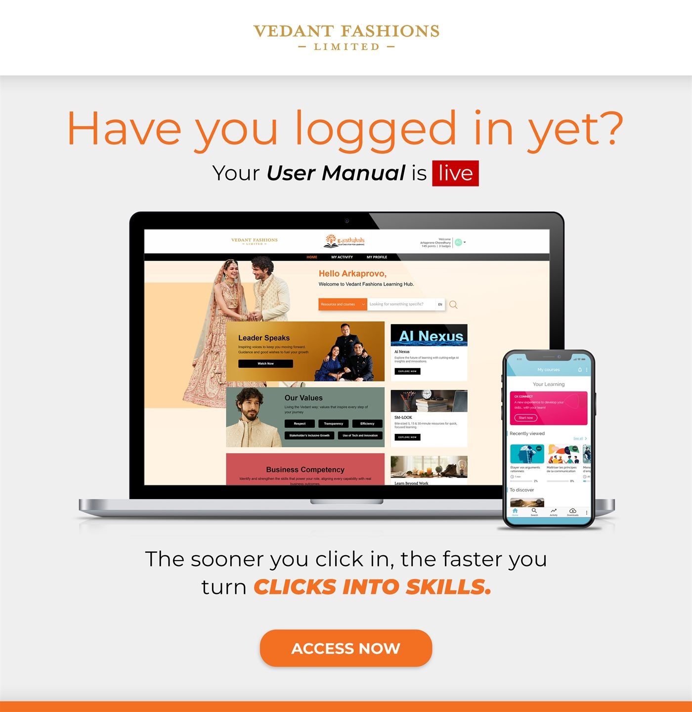
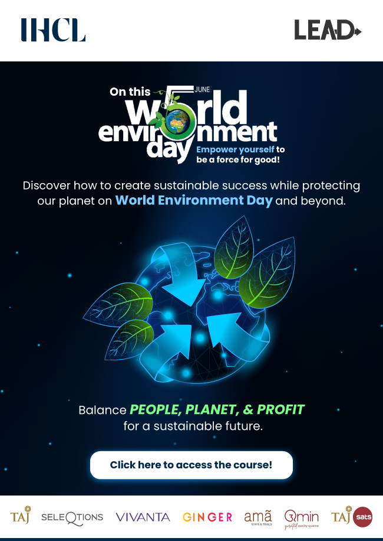

Campaigns
Flyers, mailers, and social media creatives for digital communication.
A focused showcase of vertical flyers, announcement mailers, festive creatives, and carousel-style social media posts.
Flyers
Vertical campaign pieces created for announcements, learning programs, and internal communication.








Social Media
Social posts and carousel creatives designed for event visibility and employee engagement.